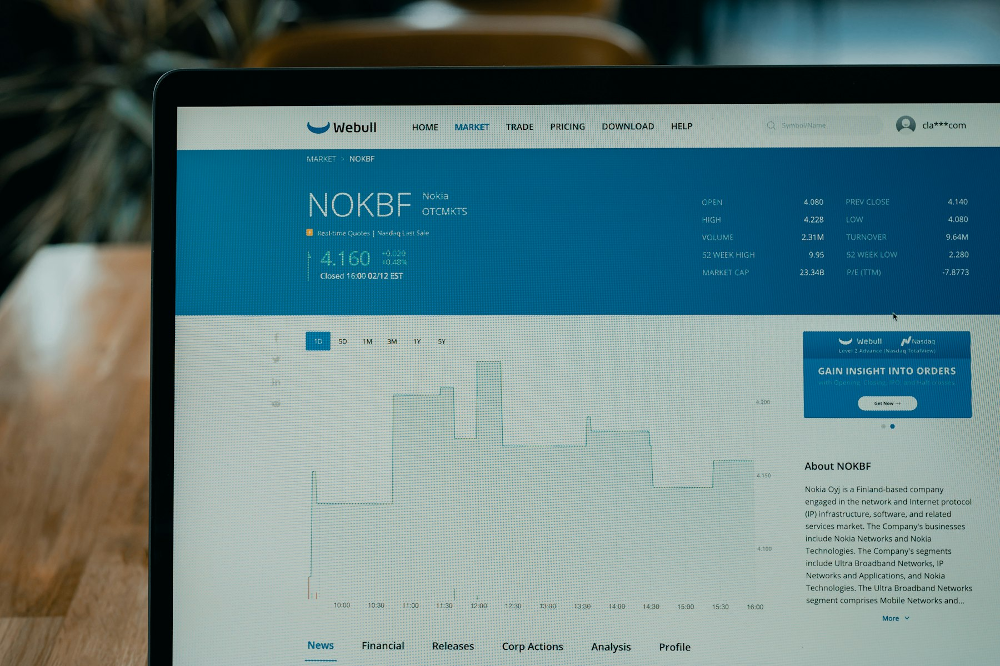

TL;DR
Start by allocating 10-20% of your budget for AI tools. Use a structured workflow to evaluate needs, pilot tools, and calculate ROI to avoid common pitfalls. Regularly review your investments and stay flexible to adapt as technology evolves.
Tech Decision-Makers: Here’s Your Clear Investment Guide

If you're a tech decision-maker in a startup, effectively allocating resources toward emerging AI tools can seem like navigating a labyrinth. The surge in options—from machine learning frameworks like TensorFlow to advanced natural language processing tools such as OpenAI's GPT models—often leads to analysis paralysis.
To streamline your decision-making process, consider implementing a structured allocation framework that emphasizes both short and long-term objectives.
For instance, collaboratively assess the potential ROI of tools based on your specific use case. If your startup, for example, is in the healthcare industry, investing $150,000 in AI-powered diagnostic tools could lead to accelerated patient care processes and reduced operational costs in as little as 12 months.
However, it's critical to factor in the time required for staff training and onboarding, which might take three to six months.
Moreover, weigh the trade-offs. Spending $100,000 on an emerging AI tool might seem attractive, but if it requires extensive customization that leads to three additional months of work, the initial savings could evaporate.
Consider a scenario where a tech startup allocated $250,000 to build a proprietary AI solution, only to find that pre-built solutions could have met their needs at half the cost and provided quicker implementation, ultimately stalling growth.
Evaluate your team’s existing skill sets as well; investing in an AI analytics platform could enhance your data-driven decision-making capabilities, yet if your team lacks the necessary expertise, hiring consultants can add up to an additional $60,000 annually.
To mitigate risks, piloting emerging tools with a limited budget—say, $50,000 for an initial trial—can provide insights that inform larger investments down the line without overcommitting resources prematurely.
Ultimately, being strategic about how you allocate resources can pave the way for effective adoption of emerging AI technologies, transforming potential pitfalls into stepping stones for growth.
Why Common Advice Misleads Your Investment Choices
### Why Common Advice Misleads Your Investment Choices
Many organizations adhere to outdated advice suggesting that they should only invest in AI tools when they feel fully 'ready.' This cautious approach often results in chronic underinvestment in essential AI capabilities, leading to missed growth opportunities.
For example, a 2022 study by McKinsey highlighted that companies that delayed AI implementation experienced a staggering productivity decline of around 25% compared to their competitors.
This is not just a theoretical notion; businesses that hesitated to allocate funds toward AI strategy and tools faced real-world repercussions, including lost market share and stagnated innovation.
Take the case of a mid-sized manufacturing firm, XYZ Corp., which decided to postpone investing in an AI-powered predictive maintenance tool, opting instead to stick with their traditional methods.
They perceived the initial financial outlay of $500,000 as a daunting commitment without a clear ROI. After two years of inaction, they faced unexpected machinery breakdowns that resulted in $1 million in unplanned downtime costs.
In contrast, a competitor who invested early in a similar tool saw a substantial reduction in maintenance costs and improved operational efficiency, reducing their downtime by 40%.
The mistaken assumption that a successful rollout hinges solely on selecting the right AI tool can cloud judgment. It leads firms to hoard resources under the guise of preparedness when, in reality, the ability to identify and allocate funds towards AI initiatives should occur continuously.
A Gartner report indicates that businesses that proactively budget for AI investments can expect to see a 25% faster integration of these capabilities, accelerating the path to enhanced efficiency and innovation.
Moreover, companies often overlook the tradeoffs involved in delaying investment. By postponing, they not only risk falling behind technologically but also stand to incur higher long-term operational costs.
For instance, a retail firm that delayed investing in an AI-driven inventory management system found itself grappling with stockouts and overstock issues, resulting in a 15% decline in revenue over just one fiscal year.
The cost of immediate action is often less than the cumulative losses incurred from inaction.
Thus, while it may seem prudent to wait until a seamless rollout can be guaranteed, the real world necessitates a more dynamic approach. Investing early in AI capabilities, despite uncertainties, can lead to more significant benefits and prevent detrimental long-term consequences.
The lesson is clear: relying on outdated paradigms of 'readiness' may hinder your organization's capacity to adapt and thrive in an increasingly competitive landscape.
A Framework to Allocate Your Resources Effectively
### A Framework to Allocate Your Resources Effectively
Successful resource allocation hinges on a structured workflow. Here’s a repeatable process you can use: 1. Budget Overview: Set an initial investment threshold to frame your financial decisions. For instance, if your company generates $1 million in annual revenue, consider allocating around 15% of the budget, equating to $150,000, towards AI tools. This budget should encompass not just the software costs but also integration and training expenses, which can often add an additional 20-30% to your initial outlay. 2. Identifying Needs: Conduct a thorough assessment of your business operations to pinpoint areas where AI could yield substantial benefits. For instance, if your company operates in retail, marketing automation tools could streamline campaigns based on customer behavior, potentially increasing conversions by as much as 25%.
Similarly, adopting AI-enhanced customer service solutions can reduce response times by up to 50%, directly impacting customer satisfaction and retention. Aim to quantify the expected outcomes, making it easier to justify your investment. 3. Research and Selection: Dedicate a focused 14-day period for systematic research to identify suitable AI solutions that align with your established needs. Utilize comparison platforms like G2 or Capterra, which not only provide user reviews but also performance metrics.
Adopt a scorecard method to evaluate options based on criteria such as cost, integration capabilities, user-friendliness, and customer support. For instance, if you discover a marketing AI tool that costs $50,000 but promises a 30% increase in lead generation, weigh that against another tool at $30,000 with less promising projections. 4. Pilot Programs: Once you narrow down a few contenders, consider conducting a pilot program with 1-2 of your top choices. Set a timeframe of 30-60 days to monitor its impact. For example, implementing a chatbot for customer service during peak shopping times can reveal firsthand data on performance metrics like amount saved on staffing or improvement in customer feedback scores.
The insights gained here are invaluable when deciding on a broader rollout. 5. Evaluation Metrics: Establish KPIs that will help assess the effectiveness of the tools you’ve implemented. This could include performance metrics such as ROI, customer satisfaction scores, and operational efficiency gains.
For instance, an AI tool that aids in supply chain management might result in a documented reduction in logistics costs of 15%, leading to savings that contribute to funding ongoing AI initiatives. 6. Scenarios and Trade-offs: Consider a scenario where a mid-sized e-commerce company decides to invest $100,000 in an AI-driven recommendation engine. The business anticipates a 20% increase in average order value, translating into projected additional revenue of $200,000.
However, trade-offs might include potential disruptions during the implementation phase and the need for upskilling staff, which could incur additional short-term costs. Weighing these trade-offs is crucial to ensure that the long-term benefits outweigh initial disruptions.
By systematically following this framework, you can effectively allocate resources for emerging AI tool investments, leading to more informed, strategic choices that position your business for success.
Real-World Case Study: Smart Allocation at Work
### Real-World Case Study: Smart Allocation at Work
Meet TechStart, a dynamic startup that strategically allocated resources toward an AI-driven customer relationship management (CRM) tool. Recognizing the growing importance of data-driven insights, they decided to devote 20% of their $500,000 operational budget—totaling $100,000—to implement an AI-enhanced CRM solution like Salesforce Einstein.
The journey began with a well-structured timeline, kicking off with a 30-day pilot phase. During this period, the team closely monitored key performance indicators, leading to a remarkable 50% increase in lead conversion rates. They implemented a phased rollout, scheduling a full system integration over six months, allowing for continuous feedback and adjustments along the way.
However, the decision wasn’t without its challenges. They faced tough trade-offs—namely, forgoing investment in other promising tools that offered short-term boosts in efficiency but lacked the transformative potential of AI integration.
For instance, a competing tool proposed a quick 20% lift in productivity through automation, but TechStart recognized that this would be a band-aid solution rather than a long-term advantage.
In their evaluation process, TechStart conducted a SWOT analysis (Strengths, Weaknesses, Opportunities, Threats) to weigh the benefits of the AI CRM against potential setbacks. They identified that while traditional CRM systems could yield marginal gains, the deep learning capabilities of an AI system like Salesforce Einstein positioned them for significant market advantage over the next five years.
After the pilot phase, positive results propelled the team to allocate an additional $50,000 for deeper analytics features and predictive modeling capabilities. This brought their total investment to $150,000, which they justified by forecasting a 75% increase in customer retention rates driven by personalized engagement.
As they moved forward, TechStart learned to manage resource flexibility skillfully. They created a contingency fund of 10% of their initial budget to buffer against unforeseen expenses, signifying their commitment to adaptability in a rapidly changing tech landscape. This smart allocation not only fueled their growth but also fostered a culture of data-driven decision-making within their team.
In one pivotal scenario, when a major competitor launched a similar AI tool, TechStart’s early investment positioned them to respond swiftly with enhanced features based on real-time data, allowing them to maintain a competitive edge. By emphasizing a long-term vision over quick-fix solutions, they effectively set themselves on a path of sustainable growth in an increasingly technology-driven market.
Avoid These Common Mistakes in AI Investments

### Avoid These Common Mistakes in AI Investments
Investing in AI tools can lead to significant advancements in efficiency and productivity; however, various common mistakes can hinder your success. It's crucial to navigate these pitfalls wisely.
- Over-reliance on a Single Tool: Depending entirely on one AI tool can limit your organization's capabilities. For instance, a company may invest in a single AI-driven CRM software expecting it to handle all customer engagement needs.
However, if that tool lacks robust analytics features, decision-makers may miss out on critical insights. Diversifying your AI investments ensures that you cover various functionalities, such as analytics, customer service automation, and data management.
Consider allocating 30% of your budget to a versatile CRM tool, 20% to data analytics software, and another 20% to chatbot solutions, allowing for a comprehensive approach.
- Underestimating Setup Time: Organizations frequently overlook the time and resources needed for implementing AI tools. An AI system designed to optimize supply chain management might promise immediate gains, but the setup can often take several months—sometimes up to 6 months—due to the intricacies involved in integration.
This includes training staff, aligning data sources, and modifying existing workflows. Underestimating this timeline can lead to unplanned costs and delayed benefits. For example, a manufacturing company may experience a 15% drop in production efficiency while waiting for an AI solution to be implemented, costing them significantly during that downtime.
- Neglecting Staff Training: AI tools are only as effective as the people using them. Failing to invest adequately in training can result in underutilization of these tools. Imagine a scenario where a healthcare organization introduces an AI diagnostic tool but doesn't provide adequate training sessions for its doctors and staff.
If only 40% of the staff use the tool effectively after six months, the organization risks misdiagnoses and missed opportunities for better patient care. A structured training program, even if it requires a budget allocation of 10%, can significantly enhance the return on investment by ensuring that the team can make the most out of the technology at hand.
- Ignoring Data Quality: AI systems thrive on quality data, and neglecting this can be detrimental. Companies sometimes invest in shiny new AI tools without ensuring that their data is clean and structured.
For example, a retail chain might implement an AI-driven inventory management tool expecting it to optimize stock levels. However, if the data fed into the system contains inconsistencies and outdated information, the AI’s recommendations could lead to excess stock, resulting in increased holding costs by as much as 20%.
Addressing data management should be a priority, potentially allocating 10% of your budget for data cleaning and governance initiatives.
By recognizing and addressing these common mistakes—whether it’s through diversification, proper training, or focusing on data quality—you can significantly enhance the potential for a successful investment in AI tools.
Crucial Next Steps for Future-Proofing Your Investments
### Crucial Next Steps for Future-Proofing Your Investments
As tech decision-makers, it’s pivotal to look beyond initial AI tool investments and prepare for ongoing advancements. Start by reviewing your current resource allocation framework every quarter to reflect market changes. Ensure AI budgets are not set in stone; flexibility is key. Consider these steps as your next move: 1. Identify New Tools: Scheduling regular review sessions can uncover emerging tools—set aside at least 3 hours each month dedicated to exploring new AI solutions that might benefit your organization. For example, if you are currently using an AI tool for customer support, consider evaluating specialized platforms like Ada or Drift that could enhance engagement rates by up to 30%. 2. Pilot Programs: Implement pilot programs with new AI investments. Allocate 10% of your budget for testing emerging solutions over 3 months. This approach mitigates risk: if a tool fails to deliver, you minimize losses while gaining insights on performance metrics.
For instance, a company that spent $5,000 on a pilot for an AI-driven analytics tool discovered a 250% ROI in its first month after full-scale implementation due to improved forecasting accuracy. 3. Training and Upskilling: As you invest in new tools, don’t forget about your team—allocate 15% of your total AI budget for training. This ensures staff are equipped to leverage new technologies effectively. Consider holding quarterly workshops and setting aside a training budget of $3,000 for each session. This will enable your team to master tools faster and achieve productivity gains. 4. Evaluate ROI: Develop a robust framework for assessing the return on investment (ROI) of AI tools. Track metrics such as cost savings, productivity improvements, or revenue increases.
For instance, if adopting an AI-powered project management tool costs $7,000 annually, monitor changes in project completion times. If your team's efficiency improves by 20%, translating to $15,000 in saved labor costs, your investment is justified. 5. Scenario Planning: Prepare for various future scenarios regarding AI advancements. A tech startup, for example, engaged in scenario planning where they considered rapid evolutionary shifts in AI regulations and tools.
They assigned resources to ensure they had a contingency plan for maintaining compliance with potential changes. This proactive approach saved them from spending $50,000 in fines due to non-compliance and positioned them ahead of competitors in the market.
Strategically implementing these steps secures not just your current investments in AI tools but also your organization’s resilience against the rapid evolution of technology.
FAQ
What is the best way to start investing in AI tools?
Evaluate your business needs first, then allocate a specific budget percentage, like 10-20% of operational expenditure, for pilot projects.
How can I measure the ROI of AI tool investments?
Set measurable KPIs before implementation, such as increased sales or reduced customer service time, then analyze them six months post-launch.
This article has been reviewed for practical usefulness and is updated when new information emerges.
Next step
Use the article as a decision point, not just reading material. Your next system matters more than more browsing.
Search more articles
Find related tools, workflows, and guides.
Photo credits
- Photo 1: Tech Daily via Unsplash
- Photo 2: Tai Bui via Unsplash
- Photo 3: itkannan4u via Pixabay
- Photo 4: sumanamul15 via Pixabay
- Photo 5: Deeezy via Pixabay